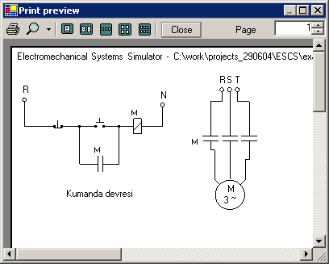

[prew] [next]
Yazıcıdan Çıktı Almak
Tasarlanan devrenin çıktısını almak için:
- Araç çubuğundan
 Yazdır düğmesine tıklayınız.
Yazdır düğmesine tıklayınız.
- Yazdırılacak görüntüyü görebileceğiniz ,Şekil 12'de gösterilen, Baskı ön izleme penceresi açılacaktır.
- Gözüken görüntüyü yazdırmak için Baskı ön izleme penceresinden yazdır düğmesine tıklayınız.

Şekil 13 Baskı Ön İzleme Penceresi
Yazıcı ve kağıt boyutlarını belirlemek için:
- Dosya>Yzdırma ayarları menüsüne tıklayarak, Şekil 13'de gösterilen, Print penceresini açınız.
- Açılan pencereden yazıcıyı seçiniz ve Properties düğmesine tıklayarak kağıdın boyutları ve konumu belirtiniz.

Şekil 14 Yazıcı Ayarlarının Yapıldığı Print Penceresi.